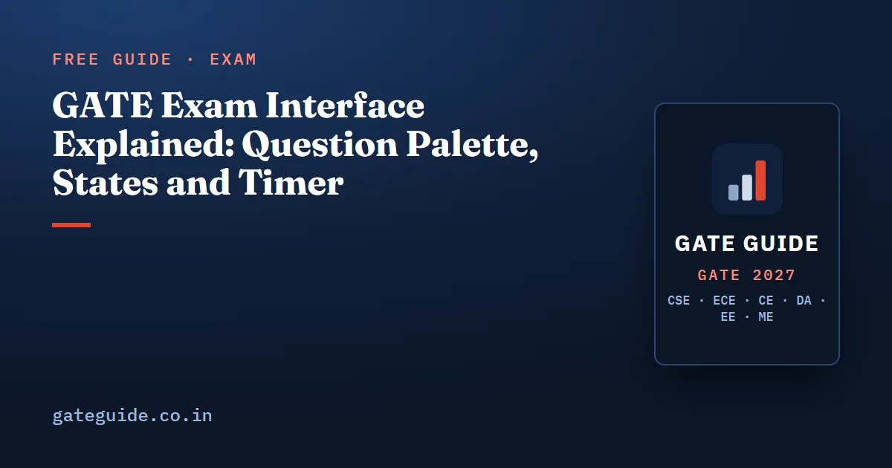

GATE Exam Interface Explained: Question Palette, States and Timer

The GATE screen shows one question at a time on the left and a question palette on the right. The palette colours each question number by its state, and only a saved answer is evaluated. An answered question that you have also marked for review still counts. This guide explains the screen, the five palette states, how each is treated when the paper ends, and how MCQ, MSQ and NAT answers go in. It applies to every branch: the official mocks for all six run on the same test software.
In this guide
- Key takeaways
- The words this guide uses
- How the screen is laid out
- The five palette states and what each one means
- How each state is treated when the paper ends
- Entering an answer: MCQ, MSQ and NAT
- A worked example: scoring a mixed set by palette state
- The timer, and what happens when it reaches zero
- Sections, zoom and instructions: what is confirmed
- Practise the screen on the official mock
- Quick revision
Key takeaways
- Every GATE 2027 paper is a computer-based test of three hours, and it ends automatically when the countdown timer reaches zero.
- The palette has five states: not visited, not answered, answered, marked for review, and answered and marked for review.
- An answer counts only if it was saved. Save and Next saves it; Mark for Review and Next saves it and flags it.
- Clicking a question number in the palette moves you without saving the answer on screen.
- A question marked for review with an answer is evaluated; one marked without an answer scores zero.
- NAT answers go in through an on-screen keypad. The keyboard is disabled.
The words this guide uses
A computer-based test (CBT) shows the questions on a computer screen; the GATE 2027 brochure says every one of the 30 papers is held this way. A response is what you have entered for a question: an option, a set of options, or a number. A response is saved when the software records it for evaluation.
A state is what the palette says about a question. To mark for review is to flag a question so you can find it again. The flag is only a bookmark; it does not change how a saved answer is marked.
How the screen is laid out
The general instructions of the official GATE 2026 mock describe the screen. The wide left panel shows one question at a time. The narrow right panel, below your name, holds the question palette. A countdown timer sits at the top right, and the instructions say its clock is set on the server. A small arrow collapses the palette to give the question more room.
| Part of the screen | Where it is | What it does |
|---|---|---|
| Question panel | Left | Shows one question and its options or keypad |
| Question palette | Right, below your name | Shows every question number in its state colour |
| Section tabs | Top left of the question panel | Switch between General Aptitude and the subject |
| Countdown timer | Top right | Shows the time left; the paper ends at zero |
| Calculator button | On screen | Opens the virtual scientific calculator |
The five palette states and what each one means
The palette legend in the GATE 2026 official mock uses five symbols. The colours below are from that mock. Check them on the GATE 2027 mock, because the 2026 mock page itself warns that the real exam's features may differ.
| State | Symbol in the 2026 mock | Saved answer? | Evaluated? |
|---|---|---|---|
| Not visited | Plain, uncoloured box | No | No, scores zero |
| Not answered | Red | No | No, scores zero |
| Answered | Green | Yes | Yes |
| Marked for review | Purple | No | No, scores zero |
| Answered and marked for review | Purple with a small green mark | Yes | Yes |
Not visited means you have never opened the question. Not answered means you opened it but no response is saved. The legend in the 2026 mock labels the last state "Answered & Marked for Review (will also be evaluated)". The mock's instructions add that questions not attempted score zero.
Remember: Green and purple-with-green are the only two states that carry a saved answer. Everything else on the palette scores zero, whatever you meant to do.
How each state is treated when the paper ends
Three buttons decide the state, so learn what each one saves. The mock instructions describe them plainly:
- Save and Next saves your answer for the current question and opens the next one.
- Mark for Review and Next saves your answer, marks the question for review, and opens the next one.
- Clear Response removes your answer. For an MCQ you can also click the chosen option again.
Clicking a number in the palette moves you to that question, but the instructions are explicit: it does not save your answer to the current question. Pressing Save and Next on the last question of a section takes you to the first question of the next section, and you can switch sections at any time.
Trap: You click an option, then jump to another question through the palette. The palette shows red, not green, and that answer will not be evaluated. Always leave a question with Save and Next or Mark for Review and Next.
The flag cuts both ways. An MCQ guess saved under Mark for Review and Next is still a saved guess; to withdraw it, press Clear Response.
Entering an answer: MCQ, MSQ and NAT
The GATE 2027 brochure sets out the three question types, and the mock shows how each is entered.
- An MCQ has four options with round buttons, and only one is correct. Selecting a second option replaces the first.
- An MSQ has four options with square checkboxes, and one or more are correct. Each click turns one option on or off.
- A NAT has no options. You enter a number on the virtual numeric keypad that appears below the question.
For a NAT, the brochure says the answer is a signed real number and that the computer keyboard will be disabled. Its examples are 10, -10, 10.1, 10.01 and -10.001, so the keypad gives you digits, a decimal point and a minus sign. The question states how many decimal places to give. The brochure advises rounding only at the end of the calculation.
You enter one number, but the official key lists each NAT answer as a range. The GATE 2026 MA key heads that column "Key/Range" and writes answers such as "1.00 to 1.10" or "5 to 5". Early rounding is how a careful calculation lands outside it.
The brochure says you must use only the on-screen virtual calculator; its keys are covered in the GATE virtual calculator guide.
A worked example: scoring a mixed set by palette state
The marking scheme is common to every GATE paper; the GATE exam pattern and marking scheme guide sets it out in full. A wrong 1-mark MCQ loses of a mark and a wrong 2-mark MCQ loses . MSQ and NAT carry no negative marking, and the GATE 2027 brochure says there is no partial marking for any question.
In words, your score is the marks of every correct saved answer, minus a third for each wrong 1-mark MCQ, minus two thirds for each wrong 2-mark MCQ:
Here is the mark value of a correct question, is the number of wrong 1-mark MCQs, and is the number of wrong 2-mark MCQs. Now take ten questions, made up for this guide, as they stand on the palette when the timer reaches zero.
| Q | Type, marks | Palette state | Outcome | Marks |
|---|---|---|---|---|
| 1 | MCQ, 1 | Answered | Correct | |
| 2 | MCQ, 1 | Answered | Wrong | |
| 3 | MCQ, 2 | Answered and marked | Correct | |
| 4 | MCQ, 2 | Answered | Wrong | |
| 5 | MSQ, 2 | Answered | All correct options, nothing extra | |
| 6 | MSQ, 1 | Answered | One wrong option added | |
| 7 | NAT, 1 | Answered | Inside the key's range | |
| 8 | NAT, 2 | Answered and marked | Outside the range | |
| 9 | MCQ, 2 | Marked for review | No saved answer | |
| 10 | MCQ, 1 | Not answered | Option clicked, left via palette |
Four answers earn marks: questions 1, 3, 5 and 7. Two MCQs are wrong, one of each mark value, so and :
Question 3 counts even though it is flagged, because its answer was saved. Question 10 might have been right, but it scores nothing: the option was never saved.
In one line: The palette state decides whether an answer exists; the marking scheme then decides what it is worth.
The timer, and what happens when it reaches zero
Every GATE 2027 paper runs for three hours, with up to four hours for candidates who take compensatory time. The brochure says the examination terminates automatically when the duration has elapsed. The mock instructions put it more simply: when the timer reaches zero the examination ends, and you are not required to submit.
The brochure lets you log in and read the instructions 20 minutes before the start, but not after 15 minutes from it, and you cannot leave before the scheduled end. The admit card and exam day rules guide covers the rest of the day.
Since nothing needs submitting, use the last two minutes to scan the palette for red numbers you meant to answer.
Sections, zoom and instructions: what is confirmed
The mock instructions confirm the sections: each section has a tab, the current tab is highlighted, and a section summary sits above the palette. They do not list a zoom button. The GATE 2027 FAQs say candidates with a visual impairment are given the option of viewing the paper in a magnified font.
The brochure does not say whether you can reopen the instructions during the test. Check it on the GATE 2027 mock, which the brochure says will be linked from the official site; dates are on the GATE 2027 exam dates page.
Practise the screen on the official mock
The official mock is the only true copy of the screen. Its page notes that mock answers are not evaluated, so use it for the buttons, not a score. Each branch's GATE 2027 book has 10 full mock tests for the questions; sit them against a three-hour clock with the same habits.
Quick revision
- The screen has a question panel on the left and the question palette on the right.
- Five states: not visited, not answered (red), answered (green), marked for review (purple), answered and marked (purple with green).
- Only answered, and answered and marked for review, are evaluated.
- Save and Next saves. Mark for Review and Next saves and flags. A palette click does not save.
- NAT answers go in on the on-screen keypad; round only at the end, and the key gives a range.
- Wrong MCQ: for 1 mark, for 2 marks; MSQ and NAT: no negative, no partial marks.
- At zero the paper ends by itself; check the palette for red numbers before then.
Frequently asked questions
Is an answered and marked for review question evaluated in GATE?
Yes, in the GATE 2026 official mock. Its question palette labels that state as answered and marked for review, will also be evaluated, and its instructions say the Mark for Review and Next button saves your answer before marking it. A question marked for review with no answer has nothing to evaluate. Confirm the wording on the GATE 2027 mock, because the mock page warns that features may differ.
What do the colours in the GATE question palette mean?
In the GATE 2026 official mock, a plain uncoloured box means not visited, red means visited but not answered, green means answered, purple means marked for review without an answer, and purple with a small green mark means answered and marked for review. Only the green and the purple-with-green questions carry a saved answer. Check the legend on the GATE 2027 mock.
Can I type a NAT answer with the keyboard in GATE?
No. The GATE 2027 information brochure says a NAT answer is a signed real number entered with the virtual numeric keypad on the monitor, and that the computer keyboard will be disabled. You click the digits, the decimal point and the minus sign with the mouse. The question states how many decimal places to give.
What happens when the GATE timer reaches zero?
The paper ends on its own. The GATE 2026 official mock instructions say the examination ends automatically when the countdown timer reaches zero and that you are not required to submit. The GATE 2027 brochure also says the examination will terminate automatically once the duration has elapsed. Saved answers are what count, so save as you go.
Does clicking a question number in the GATE palette save my answer?
No. The GATE 2026 official mock instructions state that clicking a question number in the palette does not save your answer to the current question. Use Save and Next, or Mark for Review and Next, before you move. An option you clicked and then left by jumping through the palette is not a saved answer.
Sources
- GATE 2027 official website (IIT Madras)
- GATE 2027 Information Brochure (official PDF), sections 7.1 and 7.2
- GATE 2027 question paper pattern and marking (official)
- GATE 2027 FAQs (official)
- GATE 2026 official mock test links (IIT Guwahati)
- GATE 2026 official CS mock test, general instructions and question palette legend
- GATE 2026 official answer key for MA, showing NAT keys as ranges
Dates, fees and the syllabus are set by the GATE 2027 organising institute and can change. Always confirm at gate2027.iitm.ac.in.